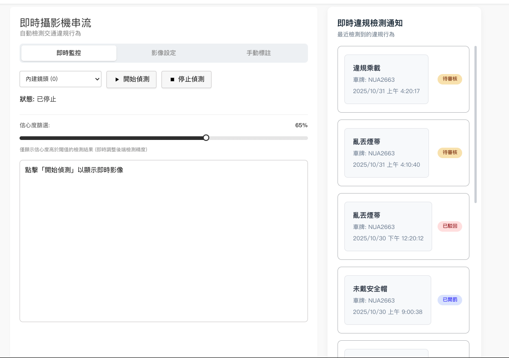
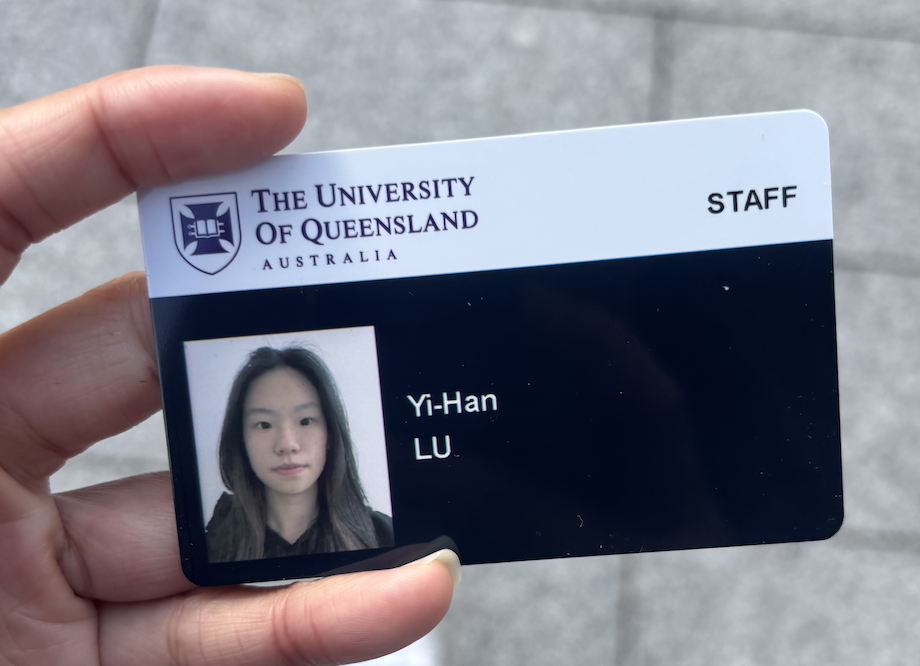
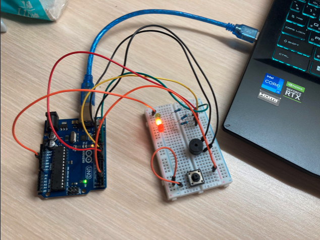
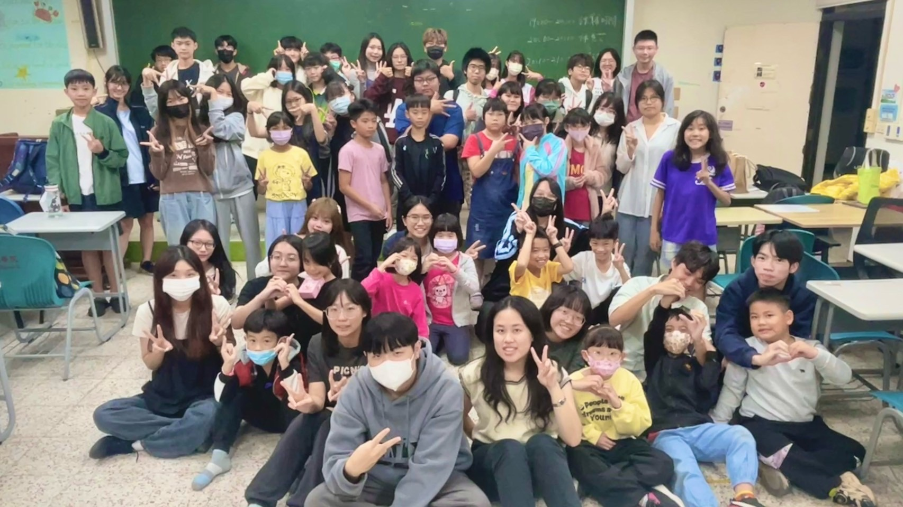
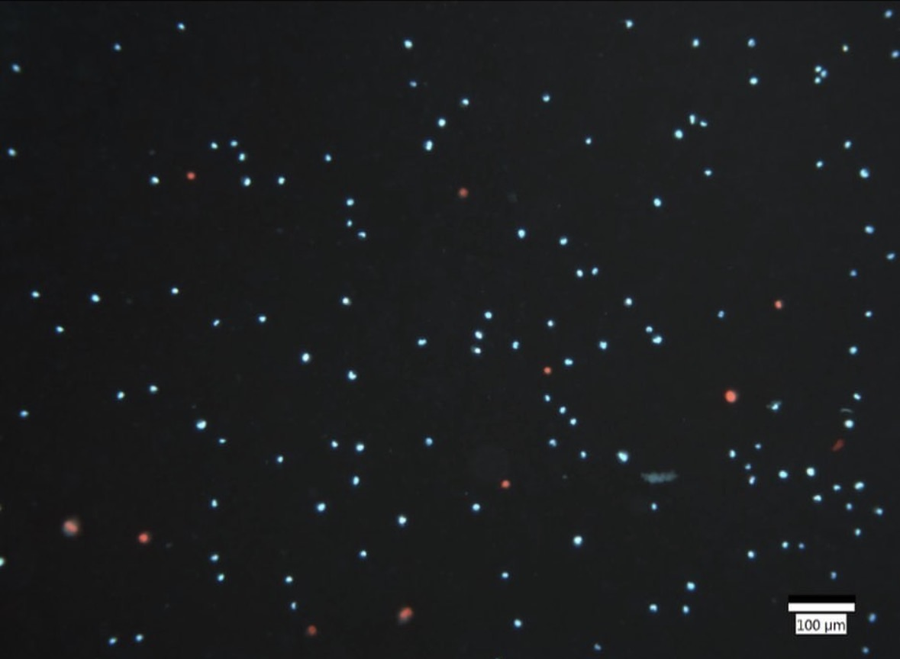
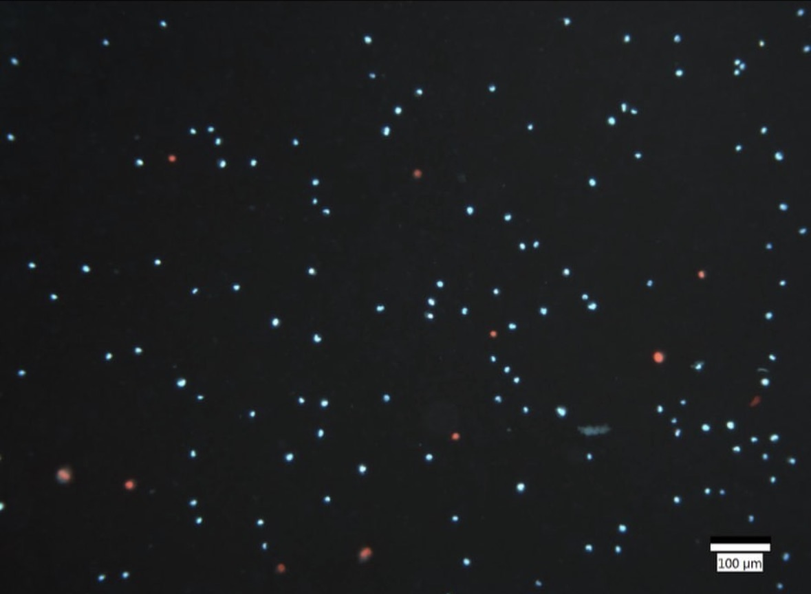

專題海報
專題發表照片
專題demo影片
大學專題發表
專題名稱：AI模型介面圖或作品集展示
昆士蘭大學員工證
 實習期間合影
昆士蘭大學校園
實習期間合影
昆士蘭大學校園
實習期間合影
昆士蘭大學校園
澳洲昆士蘭大學暑期實習25-07-12 ~ 25-09-08
 系統偵測畫面.gif
系統偵測畫面.gif
 專題系統架構圖
專題系統架構圖
 模型訓練照片
測試驗證側拍
模型訓練照片
測試驗證側拍
大學後期 (大三～大四)
-人工智慧研發產學中心
實習
開發基於 YOLOv8 深度學習 的即時交通違規檢測平台，能自動辨識機車騎士未戴安全帽與超載行為，並整合車牌辨識 API 與違規紀錄管理系統。
技術應用：React + TypeScript、Flask RESTful API、PostgreSQL、Redis、Docker Compose、GitHub Actions。
成果：YOLOv8 檢測準確率達 85%+，多執行緒架構將延遲降 70%，實現 30 FPS 即時影像處理，並以 Git 協作與敏捷開發流程完成系統整合。
系排比賽照片
arduino實作照片
參與志工團照片
大學初期 (大一～大二)
在大一至大二學期間，我透過修習多門課程與實作練習學習作品逐步建立資訊領域的基礎，包括 Arduino、網頁前後端設計與專案管理訓練。
透過這些經驗，我漸漸地對前後端開發與人工智慧應用整合產生了濃厚興趣。
在課外方面，我利用課餘時間參與學校志工團，培養了團隊協作與溝通能力；同時我也在程式補習班擔任助教兼職，強化了我對程式設計與教育應用的實務理解。
 BMI程式積木照片
BMI程式積木照片
 BMI程式畫面照片
DAPI／PI 螢光染色觀察
BMI程式畫面照片
DAPI／PI 螢光染色觀察活細胞與凋亡細胞
高中時期
我對資訊與生醫的興趣始於高中時期。 在就讀高中期間，我透過實作 App Inventor 學習程式設計，初次體會到將想法轉化為程式積木拼裝的成就感，也因此啟發了我對資訊技術與程式開發的興趣。 之後我參與 屏科大分子胚胎研究室活動，親手操作螢光顯微鏡，利用 DAPI 與碘化丙啶染劑觀察細胞狀態。 高中的這些經驗是我研究資訊與生醫科技領域的起點。